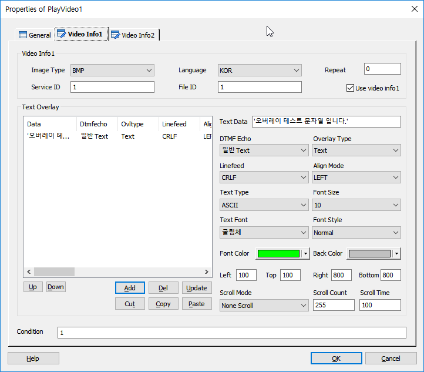
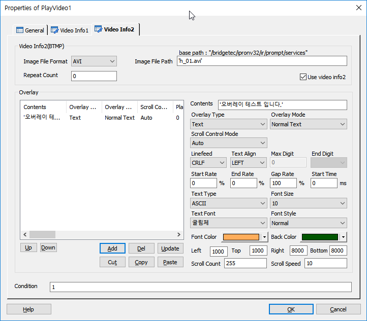

영상 IVR 시스템 환경을 구축할 경우 영상 파일을 Play 할 수 있는 기능을 제공 하며 영상 파일 Play 시 Text Overlay 기능도 사용 할 수 있도록 합니다.
ICON

PROPERTIES
 Video Info
Video Info
· DefineMenu Item 의 Video Option 과 동일한 속성 입니다.

Video Info1
Image Type : 비디오 이미지 타입을 지정 합니다.
Language : 비디오 서버의 언어를 지정 합니다.
Repeat : 비디오 재생 반복 횟수를 지정 합니다.
Service ID : 정의된 Service ID를 지정 합니다.( 예 : 삼성화재 = SMH )
- Service ID는 비디오 서버에서 지정한 사이트별로 정의한 ID 입니다.
File ID : 비디오 파일의 명을 지정 합니다.
Use video info1 Check Box: Video Info1 을 사용 합니다.
♣ 참고. 비디오 서버의 비디오 파일 구조
[ AAA-CCC-XXXXBBBBBB.ZZZ ]
AAA : Service ID
CCC : Language
XXXX : 파일 형태 구분자(비디오 서버에서 지정)
BBBBBB : File ID
ZZZ : Image Type
예 : SMH-KOR-XXXXSMH00001.AVI
Text Overlay
Text Data : 영상에 보여질 Text 데이터를 지정 합니다.(변수 사용 가능)
DTMF Echo : DTMF 출력 모드를 지정 합니다.
Overlay Type : Overlay 출력 타입을 지정 합니다.
Linefeed : 라인 피드의 타입을 지정 합니다.
Align Mode : 정렬 모드를 지정 합니다.
Text Type : Text의 타입을 지정 합니다.
Font Size : 폰트의 크기를 지정 합니다.
Text Font : 폰트를 지정 합니다.
Font Style : 폰트의 타입을 지정 합니다.
Font Color : 폰트의 색을 지정 합니다.
Back Color : 폰트의 배경색을 지정 합니다.
Left : Text의 출력 위치를 지정 합니다.
Top :Text의 출력 위치를 지정 합니다.
Right :Text의 출력 위치를 지정 합니다.
Bottom :Text의 출력 위치를 지정 합니다.
Scroll Mode : 스크롤 여부 및 스크롤 방향을 지정 합니다.
Scroll Count : 스크롤 할 Text 길이를 지정 합니다.
Scroll Time : 스크롤 할 시간을 지정 합니다.(단위. second)
Up Button : 선택한 Text Data 를 위로 이동 합니다.
Down Button : 선택한 Text Data 를 아래로 이동합니다.
Add Button : Text를 추가 합니다.
Del Button : 선택한 Text Data를 제거 합니다.
Update Button : 선택한 Text Data 를 갱신 합니다.
Cut Button : 선택한 Text Data 를 잘라 냅니다.(Ctrl+X)
Copy Button : 선택한 Text Data 를 복사 합니다.(Ctrl+C)
Paste Button : 복사한 Text Data 를 붙여넣습니다.(Ctrl+V)
Condition : 아이템 실행 조건을 지정 합니다.

Stream Info2
Image File Format : 비디오 이미지 타입을 지정 합니다.
Image File Path : Play할 비디오 파일을 지정 합니다.(Base Path: /bridgetec/ipron32/ir/prompt/service)
Repeat Count: 비디오 재생 반복 횟수를 지정 합니다.
Use video info2 Check Box: Video Info2 을 사용 합니다.
Text Overlay
Contents : 영상에 Overlay 될 데이터를 지정 합니다.(변수 사용 가능)
Overlay Type : Overlay 타입을 지정 합니다.
Overlay Mode : Overlay 출력 모드를 지정 합니다.
Scroll Control Mode : 스크롤 모드를 지정 합니다.
Linefeed : 라인 피드의 타입을 지정 합니다.
Text Align Mode : 정렬 모드를 지정 합니다.
Max Digit : 출력될 최대 Digit개수를 지정합니다(Overlay Mode가 DTMF Echo)
End Digit : Digit 출력을 중단하는 Digit를 지정합니다(Overlay Mode가 DTMF Echo)
Start Rate : 스크롤 시작 위치를 지정 합니다.
End Rate : 스크롤 종료 위치를 지정 합니다.
Gap Rate : 스크롤 사이의 간격을 지정 합니다.
Start Time : Play Start 시간으로 해당 시간 경과 후 Play를 시작 합니다.
Text Type : Text의 타입을 지정 합니다.
Font Size : 폰트의 크기를 지정 합니다.
Text Font : 폰트를 지정 합니다.
Font Style : 폰트의 타입을 지정 합니다.
Font Color : 폰트의 색을 지정 합니다.
Back Color : 폰트의 배경색을 지정 합니다.
Left : Text의 출력 위치를 지정 합니다.
Top :Text의 출력 위치를 지정 합니다.
Right :Text의 출력 위치를 지정 합니다.
Bottom :Text의 출력 위치를 지정 합니다.
Scroll Count : 스크롤 할 Text 길이를 지정 합니다.
Scroll Speed : 스크롤 할 시간을 지정 합니다.(단위. second)
Up Button : 선택한 Text Data 를 위로 이동 합니다.
Down Button : 선택한 Text Data 를 아래로 이동합니다.
Add Button : Text를 추가 합니다.
Del Button : 선택한 Text Data를 제거 합니다.
Update Button : 선택한 Text Data 를 갱신 합니다.
Cut Button : 선택한 Text Data 를 잘라 냅니다.(Ctrl+X)
Copy Button : 선택한 Text Data 를 복사 합니다.(Ctrl+C)
Paste Button : 복사한 Text Data 를 붙여넣습니다.(Ctrl+V)
Condition : 아이템 실행 조건을 지정 합니다.
RESULT
· 처리 결과 세션 변수
session.command.result : 처리 성공(_SLEE_SUCCESS_), 실패(_SLEE_FAILED_)
session.command.reason : 실패면 실패 오류코드(시스템 상수 참조)
RELATED